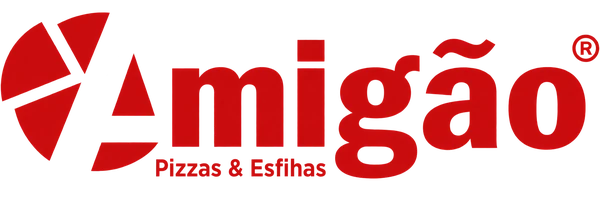
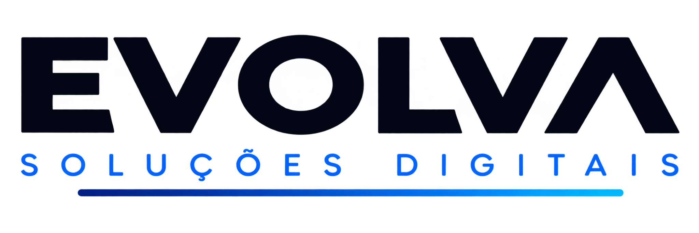

Criação de mídias digitais
Sites, blogs, landing pages, link na bio, artes para Instagram, flyers e identidade visual. Você diz a peça, a EVOLVA cria e entrega pronta para publicar.
✓Sem compromisso, manda a peça que você precisa no WhatsApp e recebe prazo e valor.

Como trabalhamos
Feito à mão,
peça a peça.
Criação de mídias digitais para marcas que querem aparecer bem em todo lugar: no feed, no story, no impresso e na web. Cada arte sai com a sua identidade, no formato certo e pronta para publicar.
Clientes
Marcas que já confiaram na EVOLVA
-

Amigão - Taberna
- Magma
- Mega 96 FM
- Creativity
-

Regional 11 - PSINDCE

O que criamos
Sites e blogs
Sites institucionais e blogs rápidos, bonitos e adaptados a qualquer tela.
Começar →Artes para Instagram
Feed, carrossel, story e capa de destaques: a linha visual do perfil inteiro.
Começar →Identidade visual
Logo, cores, tipografia e um manual simples para aplicar em tudo.
Começar →Landing page e link na bio
Uma página só, direta ao ponto, com seus contatos e ofertas reunidos.
Começar →Flyers e artes promocionais
Flyer, cardápio, panfleto e arte de promoção para imprimir ou postar.
Começar →Como funciona
Do briefing à arte pronta.
Quatro etapas simples entre o seu pedido e o arquivo final na sua mão, sem improviso.
Dúvidas comuns
Perguntas frequentes
O que exatamente a EVOLVA cria?
Sites, blogs, landing pages, link na bio, artes para Instagram (feed, carrossel e story), flyers e materiais promocionais, além de identidade visual completa: logo, cores e tipografia.
Quanto custa?
Depende da peça: pacote de social media a partir de R$ 890/mês, sites a partir de R$ 1.490 e identidade visual a partir de R$ 1.890. Artes avulsas, landing pages e link na bio têm orçamento próprio, é só dizer o que você precisa.
Como começa o trabalho?
Pelo WhatsApp: você diz a peça, para onde ela vai (Instagram, web, impresso) e manda referências. A gente responde com prazo, valor e o que precisa de você para começar.
Posso pedir ajustes na arte?
Pode. Cada entrega inclui uma rodada de ajustes, e os arquivos finais vão nos formatos certos para postar ou imprimir.
Sem compromisso
Que peça a gente cria primeiro?
Chame no WhatsApp e diga o que você precisa: arte, site, landing page ou identidade visual. A gente volta com prazo e valor.